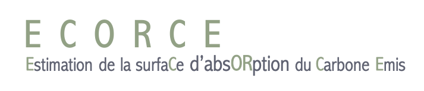

OK
Résultats
6.4
tonnes de CO² émis par ma consommation
3.1
tonnes de CO² émis par un français "moyen"
Pour obtenir ce résultat, nous multiplions votre émission par le nombre d'habitants de votre commune ou votre quartier.Vous pouvez ainsi vous rendre compte de l'impact carbone collectif de votre environnement.
Afficher la consommation moyenne
Si le mode de vie change...
Vous changez votre régimes alimentaires ?
Végétarien
Ne pas changer
Comment choisissez vous les légumes que vous consommez ?
Je mange majoritairement des fruits et légumes de saison
Je n’apporte pas d’intérêt particulier au choix des fruits et légumes que j’achète
Voulez-vous changer votre mode de déplacement ?
Je prends que le transports en communs
Je prends que la voiture
Combien de kilomètres faites-vous en avion?
kilomètres par an
Vous changez votre type de d'énergie domestique ?
Consommation électrique
Consommation de gaz / propane
Consommation de fioul
Consommation de bois
Modifier mon questionnaire
❮
❯
Share